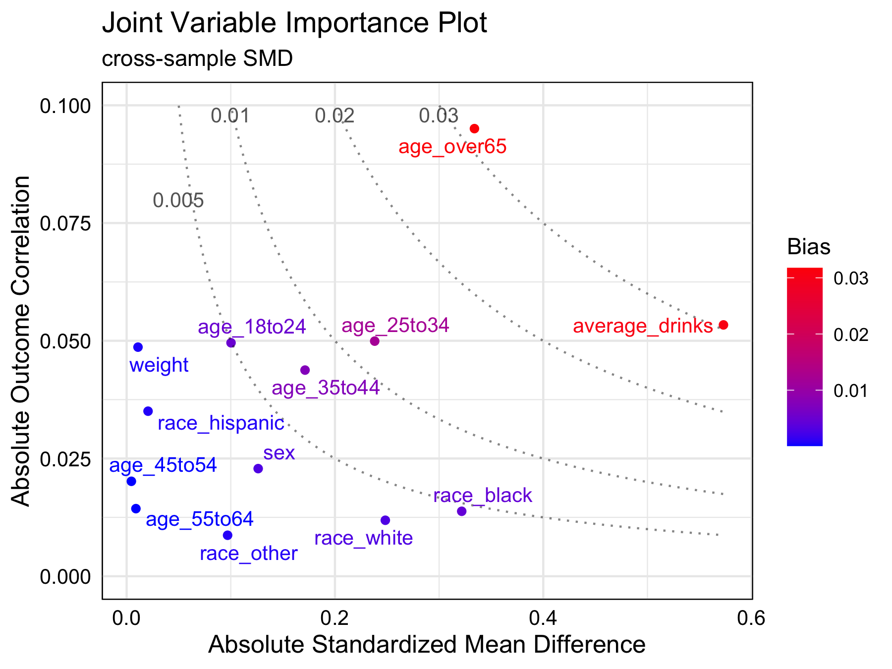

Joint variable importance plot (jointVIP) visualizes each variable’s outcome importance via Pearson’s correlation and treatment importance via cross-sample standardized mean differences. Bias curves enable comparisons to support variable prioritization among potential confounders.
Installation
You can install the jointVIP package on CRAN using:
# for version on CRAN
install.packages("jointVIP")
# for development version on github
devtools::install_github("ldliao/jointVIP")BRFSS Example
To demonstrate, we use the 2015 Behavioral Risk Factor Surveillance System (BRFSS) example to answer the causal question: Does smoking increase the risk of chronic obstructive pulmonary disease (COPD)? The data and background is inspired by Clay Ford’s work from University of Virginia Library. First, the data is cleaned to only have numeric variables, i.e., all factored variables are transformed via one-hot-encoding. Treatment variable smoke only contains 0 (control) and 1 (treatment).
With the cleaned data, you can specify details in the function create_jointVIP() like so:
library(jointVIP)
## basic example code
library(dplyr)
#>
#> Attaching package: 'dplyr'
#> The following object is masked from 'package:testthat':
#>
#> matches
#> The following objects are masked from 'package:stats':
#>
#> filter, lag
#> The following objects are masked from 'package:base':
#>
#> intersect, setdiff, setequal, union
# load data
data('brfss', package='jointVIP')
treatment = 'smoke'
outcome = 'COPD'
covariates = names(brfss)[!names(brfss) %in% c(treatment, outcome)]
## select the pilot sample from random portion
## pilot data here are considered as 'external controls'
## can be a separate dataset; should be chosen with caution
set.seed(1234895)
pilot_prop = 0.2
pilot_sample_num = sample(which(brfss %>% pull(treatment) == 0),
length(which(brfss %>% pull(treatment) == 0)) *
## set up pilot and analysis data
## we want to make sure these two data are non-overlapping
pilot_df = brfss[pilot_sample_num, ]
analysis_df = brfss[-pilot_sample_num, ]
## minimal example
brfss_jointVIP = create_jointVIP(treatment = treatment,
outcome = outcome,
covariates = covariates,
pilot_df = pilot_df,
analysis_df = analysis_df)Generic functions can be used for the jointVIP object to extract information as a glance with summary() and print().
summary(brfss_jointVIP)
#> Max absolute bias is 0.032
#> 3 variables are above the desired 0.01 absolute bias tolerance
#> 13 variables can be plotted
print(brfss_jointVIP)
#> bias
#> age_over65 0.032
#> average_drinks 0.031
#> age_25to34 0.012
plot(brfss_jointVIP)
In this example, age_over65 and average_drinks are two most important variables to adjust. At a bias tolerance of 0.01, 3 variables: age_over65, average_drinks, and age_25to34 are above the tolerance threshold. Moreover, age_over65 and average_drinks are of higher importance for adjustment than age_25to34. Although race_black and age_over65 have similar absolute standardized mean differences (0.322 and 0.333, respectively), age_over65 is more important to adjust for since its highly correlated with the outcome.
Acknowledgement
- Centers for Disease Control and Prevention (CDC). Behavioral Risk Factor Surveillance System Survey Questionnaire. Atlanta, Georgia: U.S. Department of Health and Human Services, Centers for Disease Control and Prevention, 2015.
- Ford, C. 2018. “Getting Started with Matching Methods.” UVA Library StatLab. https://library.virginia.edu:443/data/articles/getting-started-with-matching-methods (accessed Jan 29, 2024).